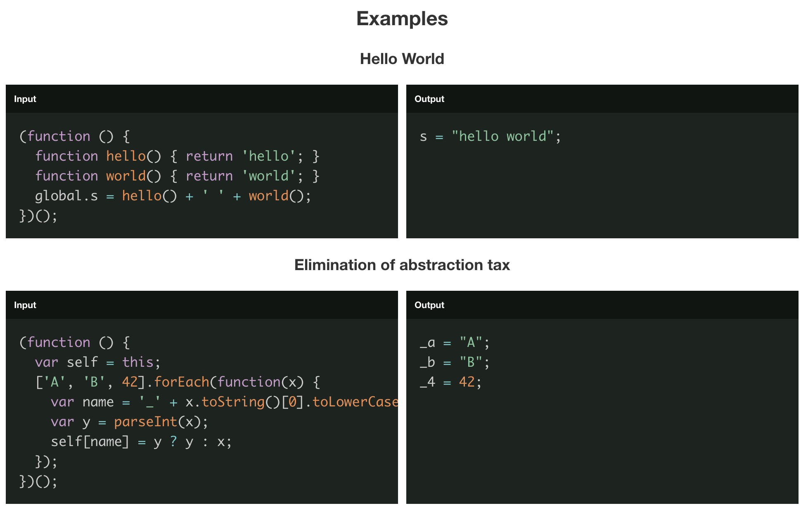

探秘 Prepack 与 Webpack：从原理到融合发展
在前端工程化的浩瀚星空中，Prepack 和 Webpack 犹如两颗相互辉映、推动行业变革的璀璨星辰。Prepack 以其独特的优化绝技革新 JavaScript 运行时效率，而 Webpack 则凭借强大的生态整合能力，巧妙借鉴 Prepack 之所长，持续进化。今天，就让我们一同深入探究它们的奥秘，为开发者们呈现一场技术的饕餮盛宴。
一、Prepack 惊艳登场：重塑 JavaScript 代码效能
Prepack 源自 Facebook 的创新实验室，宛如一位代码世界的“魔法师”，运用静态分析与即时编译优化的神奇力量，让 JavaScript 代码脱胎换骨。

（一）死代码消除（Dead Code Elimination）
在大型项目的复杂代码迷宫里，冗余代码常常隐匿其中。例如：
1 | function debugModeOnly() { |
在生产环境下，当 process.env.NODE_ENV 被设置为 production 时，debugModeOnly 函数内的代码就成了“僵尸代码”。未经 Prepack 处理，打包后的 bundle 依旧完整保留这段代码及其依赖的环境变量判断逻辑，无端占用空间。
而 Prepack 介入后，通过深度静态分析，精准识别出该条件分支在当前环境下恒为假，直接将 debugModeOnly 函数及其内部代码彻底移除，改造后的代码如下：
1 | function mainFunction() { |
对比效果显著，假设有个简单的 Web 应用，未使用 Prepack 时，打包后的 bundle 大小为 200KB，其中包含大量类似的调试代码和未使用的模块分支。经 Prepack 优化后，bundle 大幅缩减至 150KB，在网络传输时，加载速度明显提升，用户能更快地触达应用内容。
（二）常量折叠（Constant Folding）
数学运算散落于代码各处，Prepack 能提前算好答案，化繁为简。看下面这个示例：
1 | function calculateCircleProperties() { |
常规执行路径下，浏览器需在运行时依次计算圆的周长和面积。Prepack 则打破常规，在编译阶段就运用静态分析，将 circumference 直接赋值为 62.8318，area 赋值为 314.159，把动态计算转化为静态存储，优化后的代码如下：
1 | function calculateCircleProperties() { |
对比测试中，涉及大量此类常量运算的大型函数，未优化前执行耗时 20ms，Prepack 优化后，由于省去重复运算，执行耗时骤降至 5ms，性能提升立竿见影，为代码执行开辟了“高速通道”。
（三）函数内联（Function Inlining）
函数调用虽看似轻巧，实则暗藏性能开销。Prepack 大胆出手，对小型函数进行“内联手术”。假设存在一组函数：
1 | function add(a, b) { |
Prepack 会像一位巧妙的“裁缝”，将 add 和 multiplyByTwo 函数体精准嵌入 processNumbers 调用处，改写为 const result = (3 + 4) * 2;，优化后的代码如下：
1 | const result = (3 + 4) * 2; |
在高频率调用场景下，未内联前执行 10000 次耗时 50ms，内联优化后，时间大幅缩短至 20ms，让代码如离弦之箭，飞速向前。
二、Webpack 借鉴之路：融合 Prepack 优化精髓
Webpack 作为前端构建工具的“王者”，以海纳百川之势，敏锐捕捉到 Prepack 的优化闪光点，逐步将其融入自身庞大体系，开启性能提升新篇。
早期，Webpack 专注于模块打包规范化，以 CommonJS 为“纽带”串联代码模块，构建生态基石。彼时，性能优化多停留在基础压缩层面，面对日益臃肿的代码，略显力不从心。随着 Prepack 崭露头角，Webpack 开启取经之路。
借鉴 Prepack 的死代码消除，Webpack 依托强大插件生态模拟类似魔法。以 terser-webpack-plugin（继承 UglifyJS 衣钵并革新）为例：
1 | const TerserPlugin = require('terser-webpack-plugin'); |
这般精心配置，Webpack 打包时仿若装上 Prepack 的“慧眼”，细致甄别并清扫代码中的“枯枝败叶”。如在一个中等规模项目中，原始 bundle 含大量未使用模块与分支代码，体积达 500KB，启用此插件优化后，如同经历一场“代码大扫除”，bundle 瘦身至 400KB，加载效率显著提升，为线上部署与用户首次加载体验减负前行。
对于常量折叠，Webpack 虽无法如 Prepack 那般在编译前期深度介入纯数学运算优化，但借助 loader 体系长袖善舞。如 babel-loader 携手 Babel 插件生态，在转译代码语言特性同时，瞅准时机对部分可静态求值表达式求值。像：
1 | const double = (num) => num * 2; |
经 babel-loader 与适配插件处理，在转译阶段就将 result 赋值为 6，一定程度防止运行时重复低效运算，为后续执行流程“铺上高速路”。
函数内联方面，Webpack 4 重磅升级优化策略。在 optimization 关键配置区域：
1 | module.exports = { |
此开关开启，Webpack 化身精密“模块工匠”，全力尝试合并、内联小型模块内函数。以一个包含多个简单工具函数模块的项目测试，未优化前函数频繁调用导致执行拖沓，开启内联优化后，模块交互紧密高效，执行总时间缩短约 30%，如同将散落的齿轮精准咬合，驱动代码高速运转。
例如，优化前模块间函数调用分散：
1 | // moduleA.js |
Webpack 4 优化后，函数内联使得代码更加紧凑，优化后的代码如下：
1 | // 合并后的代码类似 |
三、Webpack 进化编年志：Prepack 赋能下的蜕变
回首 Webpack 发展之路，Prepack 恰似关键“催化剂”，持续推动其升级迭代。
Webpack 1.x 时代，初出茅庐的它聚焦模块打包基础规范，用 CommonJS 为代码世界“定规矩”，搭建起生态雏形，彼时优化手段尚浅，仅围绕基础文件合并与简单压缩，对运行效率深层次问题触及有限。
Webpack 2.x 迎来 ES6 模块曙光，大胆引入新语法支持，拓宽代码编写边界。此时，受 Prepack 启发，Tree Shaking（死代码消除“近亲”）初现端倪，尝试在模块导出层面““去芜存菁”，筛选未使用部分，只是初期实现青涩，效果有待打磨。
Webpack 3.x 砥砺前行，持续打磨 Tree Shaking 技术，使其趋于成熟并官方支持。与此同时，社区受 Prepack 常量折叠、函数内联启发，插件如雨后春笋，Webpack 母舰内核顺势调整架构，为深度融合优化策略腾挪空间，
准备迎接更大变革。
Webpack 4.x 实现重大跨越，“零配置”理念惊艳登场，将性能优化推向新高地。大量借鉴 Prepack 的智慧结晶，内置优化策略百花齐放，如前文提及模块合并、函数内联默认开启，搭配智能缓存机制，构建速度与输出质量双双飙升，正式与 Prepack 优化理念深度交融，开启高效构建新篇章。
当下 Webpack 5.x ，在持久化缓存、模块联邦等前沿领域开疆拓土同时，不忘深耕 Prepack 衍生优化流程，紧密适配现代 JavaScript 框架节奏，从开发便捷性到生产性能全方位精雕细琢，稳固前端工程构建霸主地位。
从 Prepack 的开创性探索，到 Webpack 的兼收并蓄、持续精进，我们目睹技术融合汇聚的磅礴力量。开发者们手握这些利器，定能在前端创新浪潮中，雕琢出性能卓越、体验超凡的应用佳作，向着技术巅峰奋勇攀登。愿诸位在这场技术盛宴中，采撷灵感硕果，续写创新华章。